About
Hi! I'm Anya.
I'm a student studying Economics and Public Policy.
I am originally from Albuquerque, New Mexico, an incredibly special place to me! I hope to one day go back home and work in public service there.
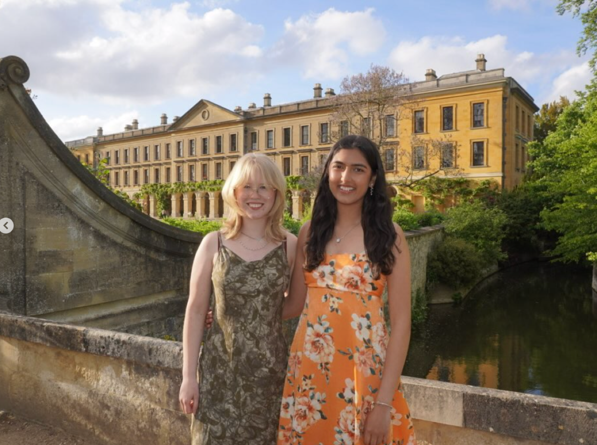
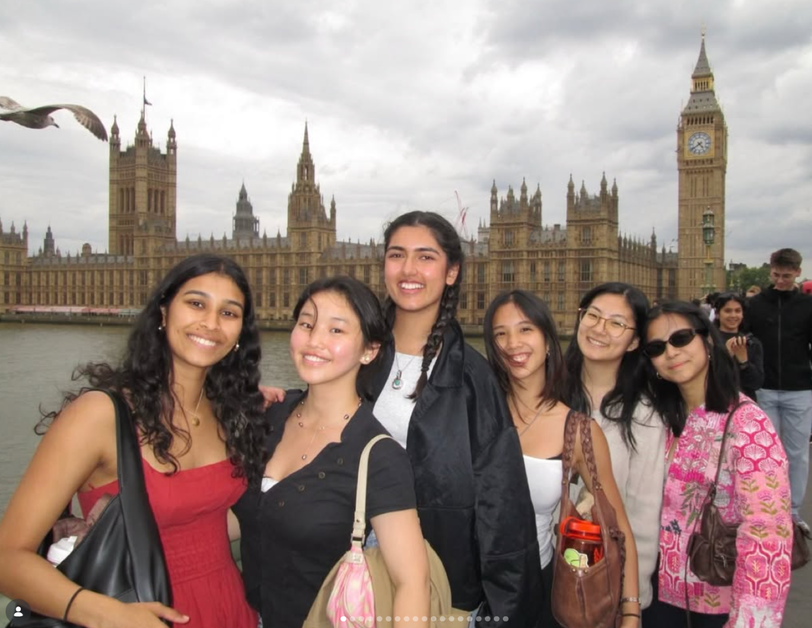
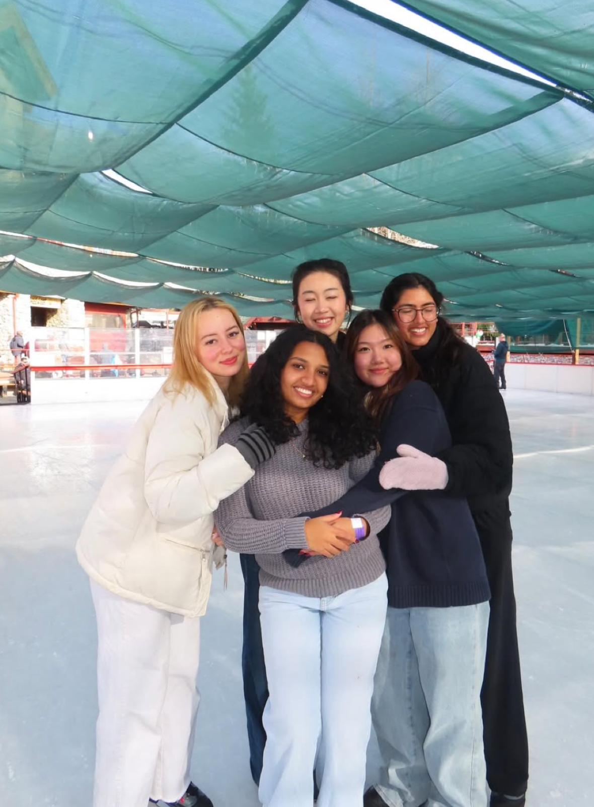
Interests
Writing, friends,
and public service.
I love writing, spending time with friends, and leading Stanford Women in Politics on campus as President.
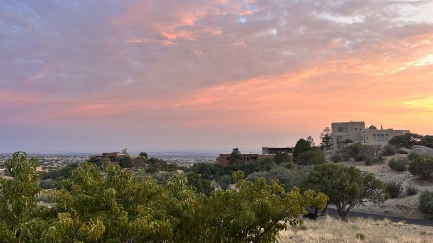
Project interests
My project interests
- Energy
- The Justice System
- Education
- AI Tools in Government
- Voting
Photo gallery
anya's photo gallery
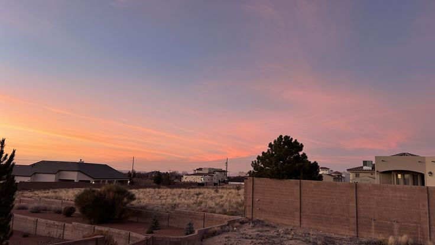
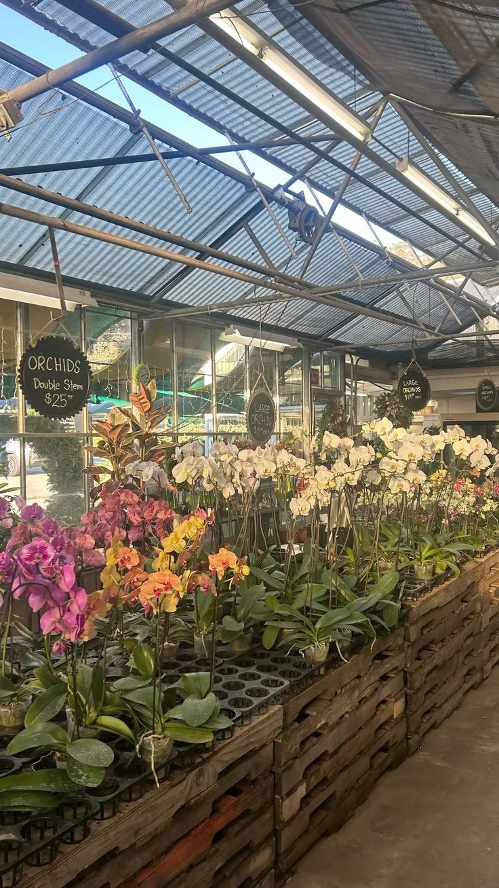
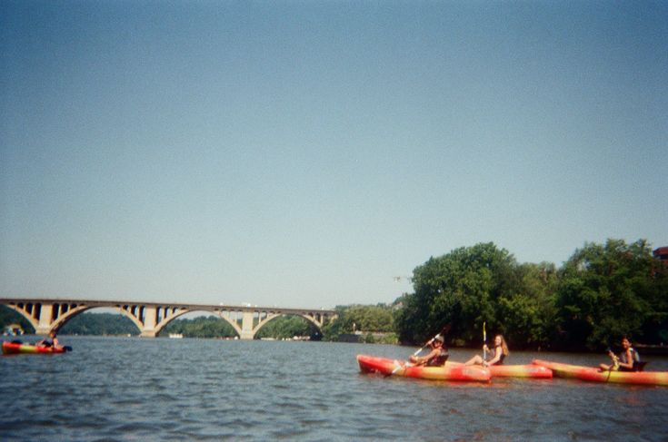
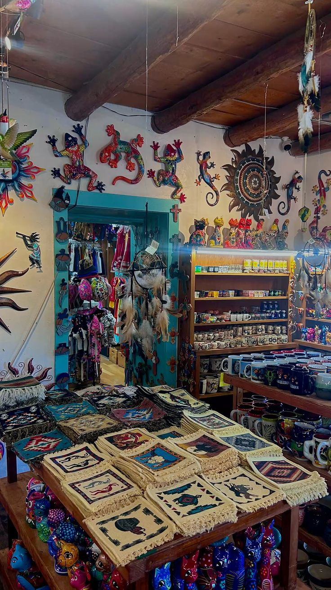
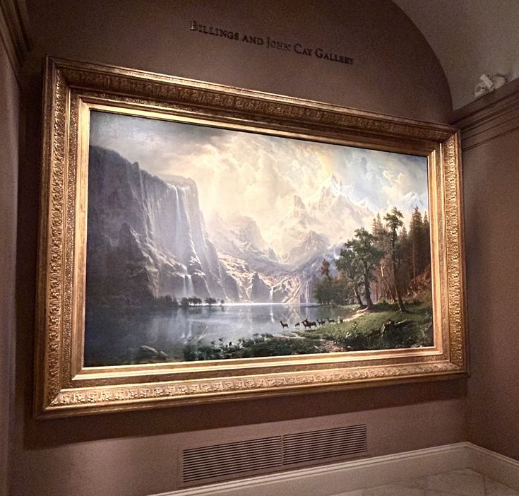
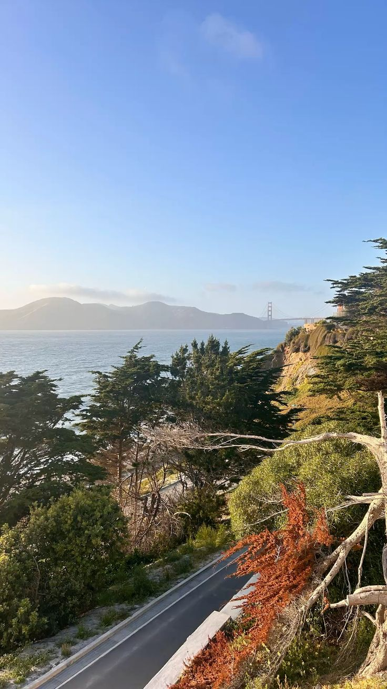
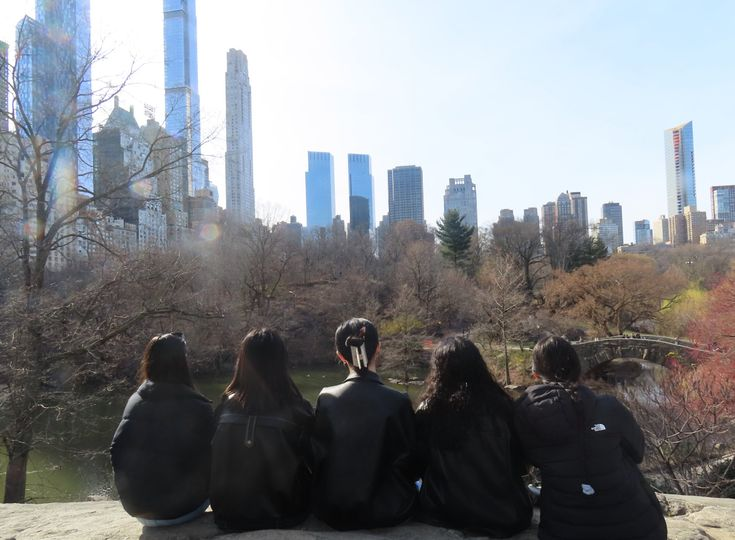
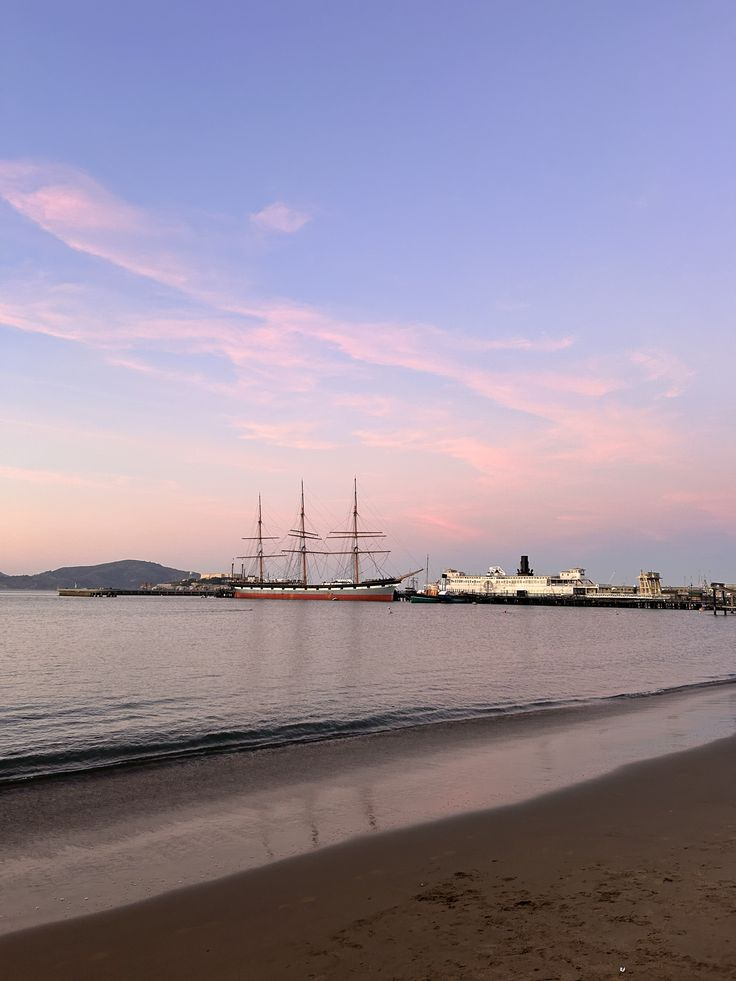
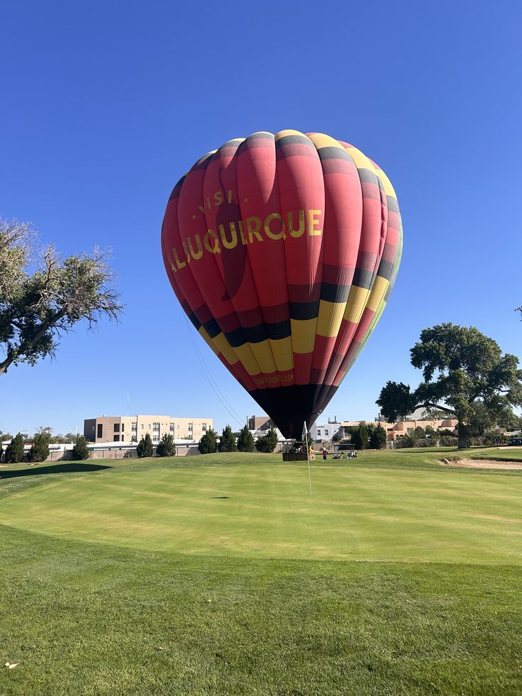
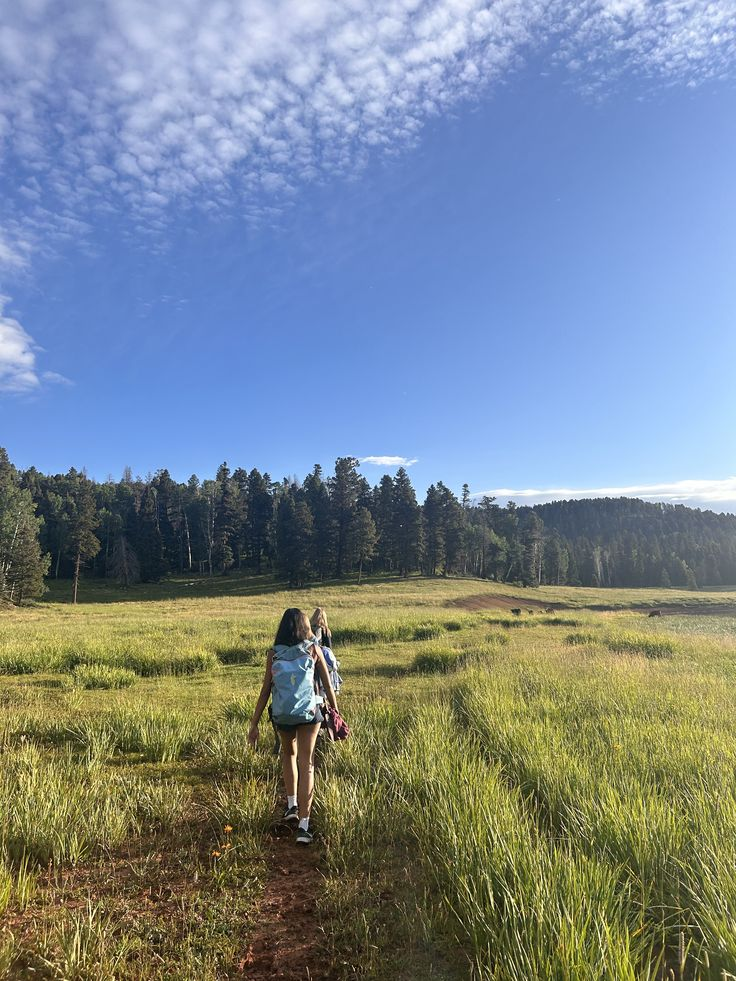